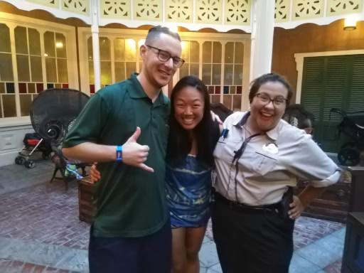
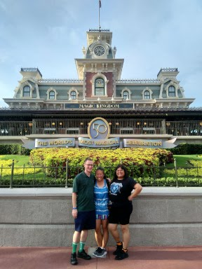
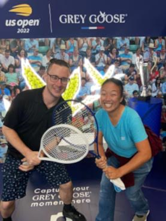

Mari's Hobbies
Home
About
Hobbies

Ran into an old friend while we were visiting Magic Kingdom!

And met up with some others to spend the day with!

Two of her hobbies are tennis and traveling! We were on a layover at JFK airport and they had a US Open exhibit.